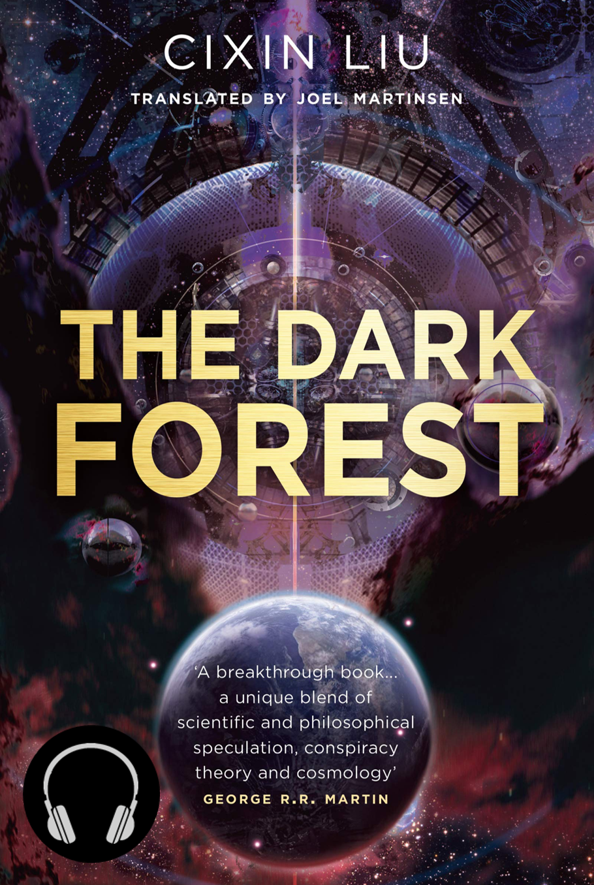
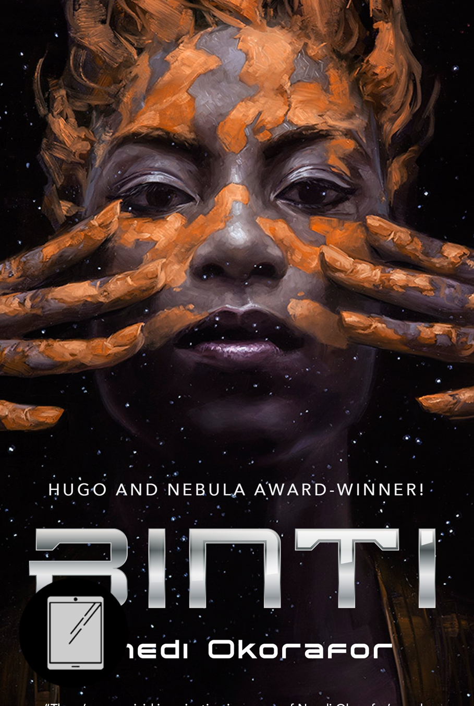
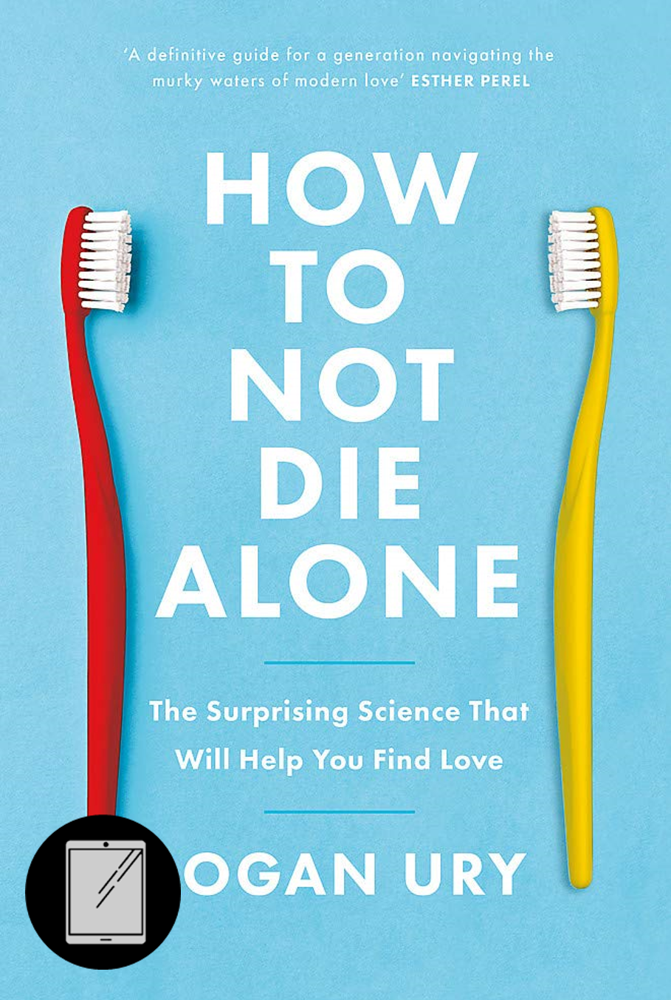
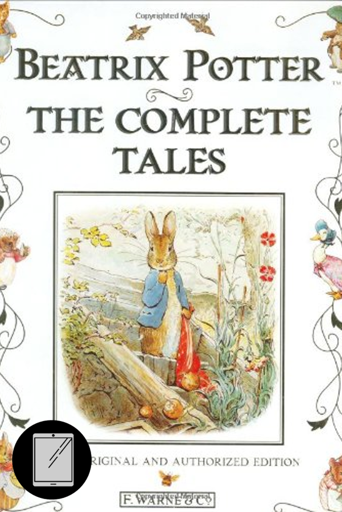
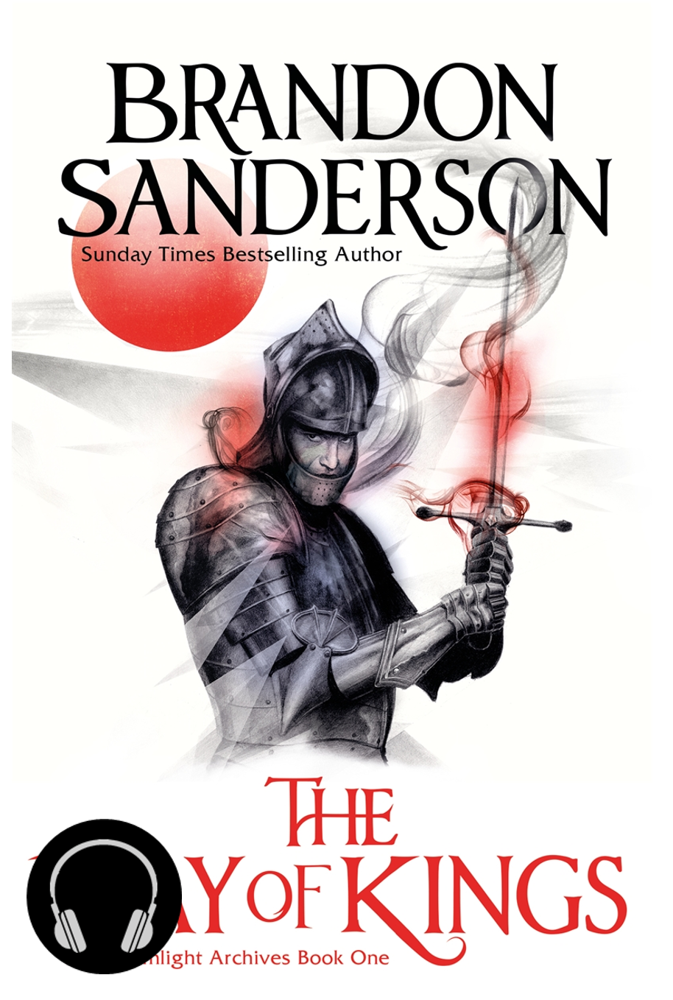

Books I Read in 2022 (Part 1)

For the last three years, I have set myself the same resolution: to read 20 books. With the end of 2022, I’ve failed it two times in three.
That’s not important though. The point was to set myself a challenge as an impetus to introduce more reading into my routine. As a child, I read near constantly, and it’s something I miss yet struggle to motivate myself to do as an adult. Even though I failed to reach the 20 books goal in 2020 and 2022, I have read a lot more than I would have otherwise, and that’s enough of a success for me.
My resolution for 2023 is exactly the same again, and I’m determined that this year will be a 20 book year (famous last words...). Being able to track my progress (and see how it compares with previous years) is a big motivator for me, so I’ve also decided to write a set of quick reviews on last year’s books. This first half covers half of the 14 I managed in 2022, and a part 2 will follow soon.
WARNING: These reviews contain mild spoilers!
‘The Dark Forest’ by Cixin Liu

"Suppose a vast number of civilizations are distributed throughout the universe, on the order of the number of detectable stars. Lots and lots of them. The mathematical structure of cosmic sociology is far clearer than that of human sociology. The factors of chaos and randomness in the complex makeups of every civilized society in the universe get filtered out by the immense distance, so those civilizations can act as reference points that are relatively easy to manipulate mathematically. First: Survival is the primary need of civilization. Second: Civilization continuously grows and expands, but the total matter in the universe remains constant."
The second book in Liu’s ‘Remembrance of Earth’s Past’ series (following on from ‘The Three Body Problem’) is a continuation of my favourite modern example of hard SciFi.I listened to this as an audiobook, and I must commend the narrator, Bruno Roubicek. He manages to differentiate a large, international cast with _ and seems to have a good understanding of the pronunciation of the various Chinese terms used.
⭐ ⭐ ⭐ ⭐ ⭐ | Liu is perhaps the pinnacle of modern science fiction
‘Binti’ by Nnedi Okorafor

"My tribe is obsessed with innovation and technology, but it is small, private, and, as I said, we don’t like to leave Earth. We prefer to explore the universe by traveling inward, as opposed to outward. No Himba has ever gone to Oomza Uni. So me being the only one on the ship was not that surprising. However, just because something isn’t surprising doesn’t mean it’s easy to deal with."
Fringilla nisl. Donec accumsan interdum nisi, quis tincidunt felis sagittis eget. tempus euismod. Vestibulum ante ipsum primis in faucibus vestibulum. Blandit adipiscing eu felis iaculis volutpat ac adipiscing accumsan eu faucibus. Integer ac pellentesque praesent tincidunt felis sagittis eget. tempus euismod. Vestibulum ante ipsum primis in faucibus vestibulum. Blandit adipiscing eu felis iaculis volutpat ac adipiscing accumsan eu faucibus. Integer ac pellentesque praesent. Donec accumsan interdum nisi, quis tincidunt felis sagittis eget. tempus euismod. Vestibulum ante ipsum primis in faucibus vestibulum. Blandit adipiscing eu felis iaculis volutpat ac adipiscing accumsan eu faucibus. Integer ac pellentesque praesent tincidunt felis sagittis eget. tempus euismod. Vestibulum ante ipsum primis in faucibus vestibulum. Blandit adipiscing eu felis iaculis volutpat ac adipiscing accumsan eu faucibus. Integer ac pellentesque praesent. Blandit adipiscing eu felis iaculis volutpat ac adipiscing accumsan eu faucibus. Integer ac pellentesque praesent tincidunt felis sagittis eget. tempus euismod. Vestibulum ante ipsum primis in faucibus vestibulum. Blandit adipiscing eu felis iaculis volutpat ac adipiscing accumsan eu faucibus. Integer ac pellentesque praesent.⭐ ⭐ | Interesting worldbuilding, but with inconsistencies that broke my immersion
‘How Not to Die Along’ by Logan Ury

“Great relationships are built, not discovered. But our minds are often stuck in a trap, thinking that by combing through hundreds of options, we’ll be closer to knowing whether the one in front of us is 'right.'”
Fringilla nisl. Donec accumsan interdum nisi, quis tincidunt felis sagittis eget. tempus euismod. Vestibulum ante ipsum primis in faucibus vestibulum. Blandit adipiscing eu felis iaculis volutpat ac adipiscing accumsan eu faucibus. Integer ac pellentesque praesent tincidunt felis sagittis eget. tempus euismod. Vestibulum ante ipsum primis in faucibus vestibulum. Blandit adipiscing eu felis iaculis volutpat ac adipiscing accumsan eu faucibus. Integer ac pellentesque praesent. Donec accumsan interdum nisi, quis tincidunt felis sagittis eget. tempus euismod. Vestibulum ante ipsum primis in faucibus vestibulum. Blandit adipiscing eu felis iaculis volutpat ac adipiscing accumsan eu faucibus. Integer ac pellentesque praesent tincidunt felis sagittis eget. tempus euismod. Vestibulum ante ipsum primis in faucibus vestibulum. Blandit adipiscing eu felis iaculis volutpat ac adipiscing accumsan eu faucibus. Integer ac pellentesque praesent. Blandit adipiscing eu felis iaculis volutpat ac adipiscing accumsan eu faucibus. Integer ac pellentesque praesent tincidunt felis sagittis eget. tempus euismod. Vestibulum ante ipsum primis in faucibus vestibulum. Blandit adipiscing eu felis iaculis volutpat ac adipiscing accumsan eu faucibus. Integer ac pellentesque praesent.⭐ ⭐ ⭐ ⭐ | I have not died alone, so I can only assume the advice is pretty good
‘Eon: Rise of the Dragoneye’ and ‘Eona: Return of the Dragoneye’ by Alison Goodman

“You are wrong when you say there is no power in being a woman. When I think of my mother and the women in my tribe, and the hidden women in the harem, I know there are many types of power in this world...I found power in accepting the truth of who I am. It may not be a truth that others can accept, but I cannot live any other way. How would it be to live a lie every minute of your life? I don't think I could do it.”
A YA series set in a fantasy realm heavily inspired by East Asian cultures. The first part of this duology, Eon, is one of the most unique fantasy books I’ve ever read.Eon the disabled girl pretending to be a boy (and experimenting with what is effectively hormone replacement :P) Lady Dela the Contraire Ryko the Eunuch Lots of twists and political intrigue
I originally picked this up in my early teens (before the release of the sequel), and its testament to the quality and complexity of the narrative that I just had to find and read it again.
⭐ ⭐ ⭐ ⭐ | An engaging world and narrative that allows exploration of a whole host of complex social issues
Sadly, the second book, Eona, neglects most of the features that made the original so exceptional. Magical powers remove the impact from Eona’s disability and she appears to forget about it almost immediately. Despite spending years dealing with the stigma and physical limitations this brought, there is very little effect on her mindset, although Goodman makes some effort here. Eona abandons her male disguise for a quite traditional love triangle that is only maintained through a series of understandings that wouldn’t be too out of place in a farce. Lady Dela is also forced to spend most of the book in disguise as a man. This in particular seemed to be a missed opportunity to explore the psychological challenges that this forced breakdown of personal identity must have caused.
It’s not all bad – I was quite invested in Kygo and Eona’s budding romance, as well as the conflict that developed between Ryko and Eona after they become magically bound to one another. However, ultimately I felt that the series developed from something novel and unexpected into a pretty run-of-the-mill YA fantasy in the second instalment.
⭐ ⭐ | Could deserve 3 stars as a standalone, but I expected more after ‘Eon’
‘The Complete Tales’ by Beatrix Potter

“Once upon a time there was a frog called Mr. Jeremy Fisher; he lived in a little damp house amongst the buttercups at the edge of a pond. The water was all slippery-sloppy in the larder and in the back passage. But Mr. Jeremy liked getting his feet wet; nobody ever scolded him, and he never caught a cold!”
Fringilla nisl. Donec accumsan interdum nisi, quis tincidunt felis sagittis eget. tempus euismod. Vestibulum ante ipsum primis in faucibus vestibulum. Blandit adipiscing eu felis iaculis volutpat ac adipiscing accumsan eu faucibus. Integer ac pellentesque praesent tincidunt felis sagittis eget. tempus euismod. Vestibulum ante ipsum primis in faucibus vestibulum. Blandit adipiscing eu felis iaculis volutpat ac adipiscing accumsan eu faucibus. Integer ac pellentesque praesent. Donec accumsan interdum nisi, quis tincidunt felis sagittis eget. tempus euismod. Vestibulum ante ipsum primis in faucibus vestibulum. Blandit adipiscing eu felis iaculis volutpat ac adipiscing accumsan eu faucibus. Integer ac pellentesque praesent tincidunt felis sagittis eget. tempus euismod. Vestibulum ante ipsum primis in faucibus vestibulum. Blandit adipiscing eu felis iaculis volutpat ac adipiscing accumsan eu faucibus. Integer ac pellentesque praesent. Blandit adipiscing eu felis iaculis volutpat ac adipiscing accumsan eu faucibus. Integer ac pellentesque praesent tincidunt felis sagittis eget. tempus euismod. Vestibulum ante ipsum primis in faucibus vestibulum. Blandit adipiscing eu felis iaculis volutpat ac adipiscing accumsan eu faucibus. Integer ac pellentesque praesent.⭐ ⭐ ⭐ | Enduring set of children's stories with a nice dose of nostalgia
‘The Way of Kings’ by Brandon Sanderson

"“Life before death. Strength before weakness. Journey before destination. That was their motto, and was the First Ideal of the Immortal Words."
Fringilla nisl. Donec accumsan interdum nisi, quis tincidunt felis sagittis eget. tempus euismod. Vestibulum ante ipsum primis in faucibus vestibulum. Blandit adipiscing eu felis iaculis volutpat ac adipiscing accumsan eu faucibus. Integer ac pellentesque praesent tincidunt felis sagittis eget. tempus euismod. Vestibulum ante ipsum primis in faucibus vestibulum. Blandit adipiscing eu felis iaculis volutpat ac adipiscing accumsan eu faucibus. Integer ac pellentesque praesent. Donec accumsan interdum nisi, quis tincidunt felis sagittis eget. tempus euismod. Vestibulum ante ipsum primis in faucibus vestibulum. Blandit adipiscing eu felis iaculis volutpat ac adipiscing accumsan eu faucibus. Integer ac pellentesque praesent tincidunt felis sagittis eget. tempus euismod. Vestibulum ante ipsum primis in faucibus vestibulum. Blandit adipiscing eu felis iaculis volutpat ac adipiscing accumsan eu faucibus. Integer ac pellentesque praesent. Blandit adipiscing eu felis iaculis volutpat ac adipiscing accumsan eu faucibus. Integer ac pellentesque praesent tincidunt felis sagittis eget. tempus euismod. Vestibulum ante ipsum primis in faucibus vestibulum. Blandit adipiscing eu felis iaculis volutpat ac adipiscing accumsan eu faucibus. Integer ac pellentesque praesent.⭐ ⭐ ⭐ ⭐ ⭐ | Amazing worldbuilding! Phenomenal characterisation! Read it!